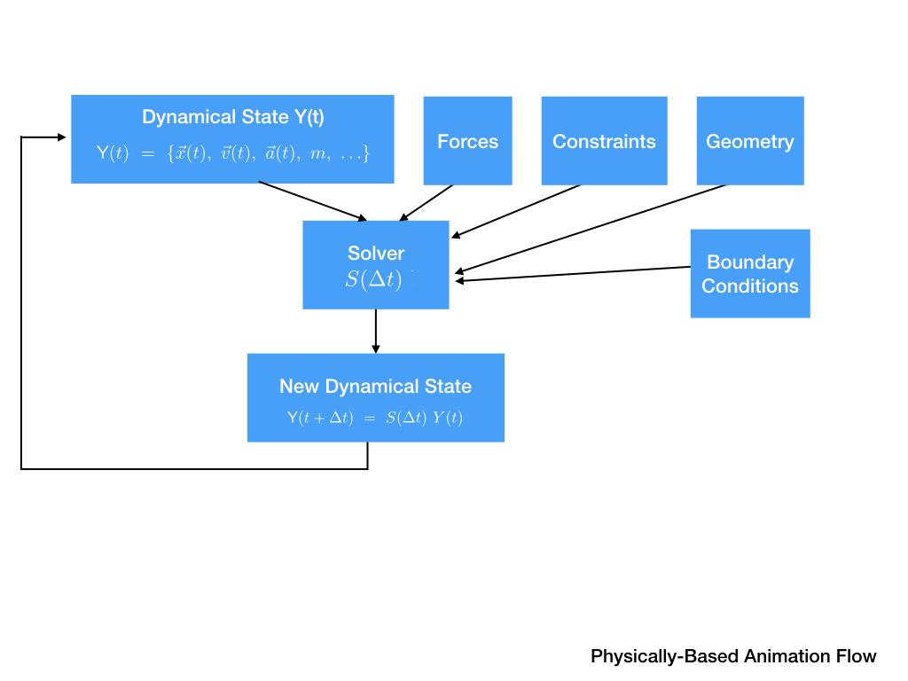
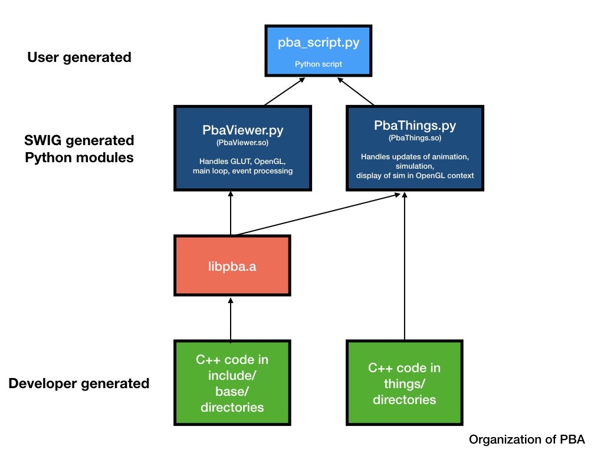

Introduction
This project implements particle-particle collisions, particle-object collisions, softbody simulation and rigidbody simulation. Translate mathematical and physical conceptes into software.
The following two figures show Flow of Dynamical Simulation and Flow of PBA Code. These two figures are from course website.


Animation

homepage
red
green
blue